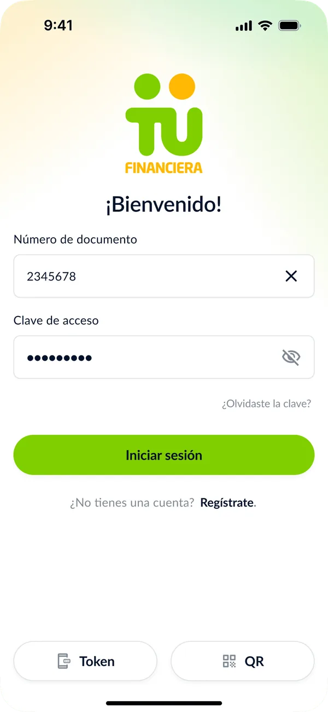
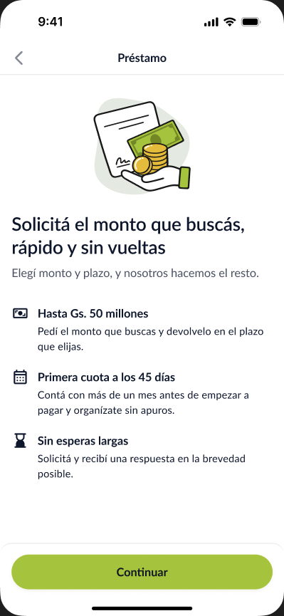
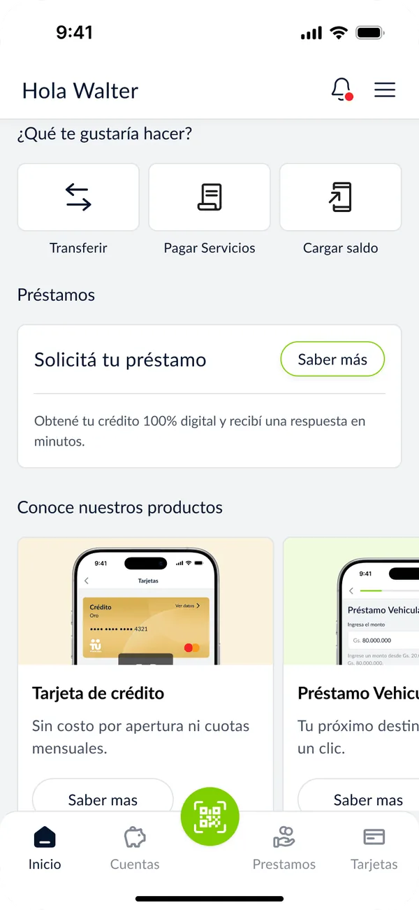
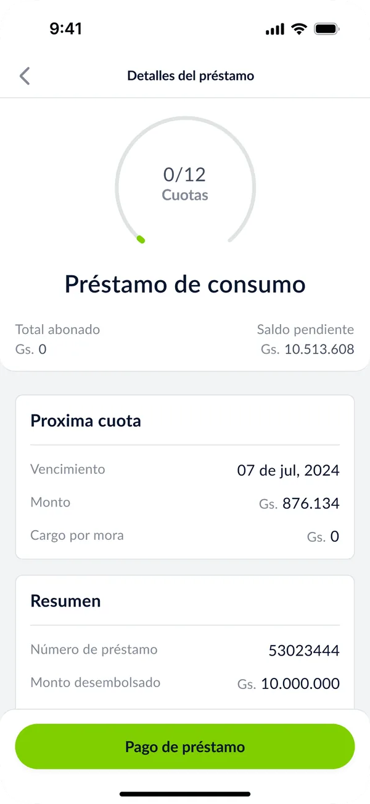
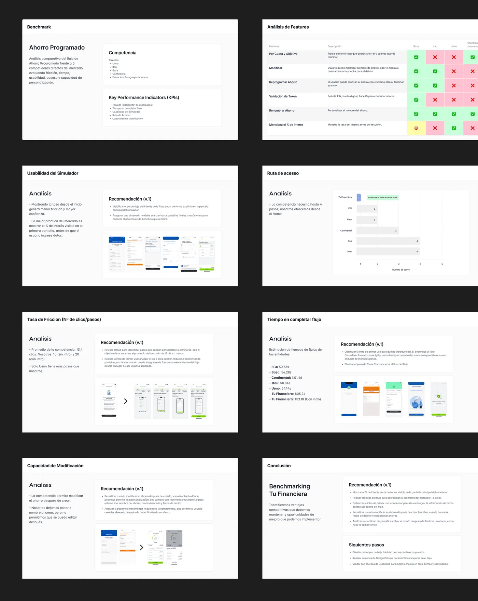
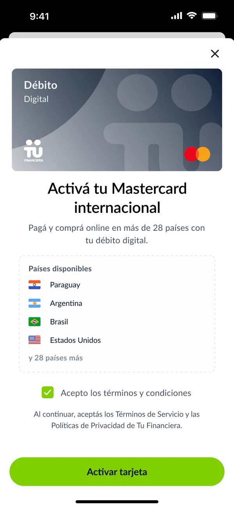
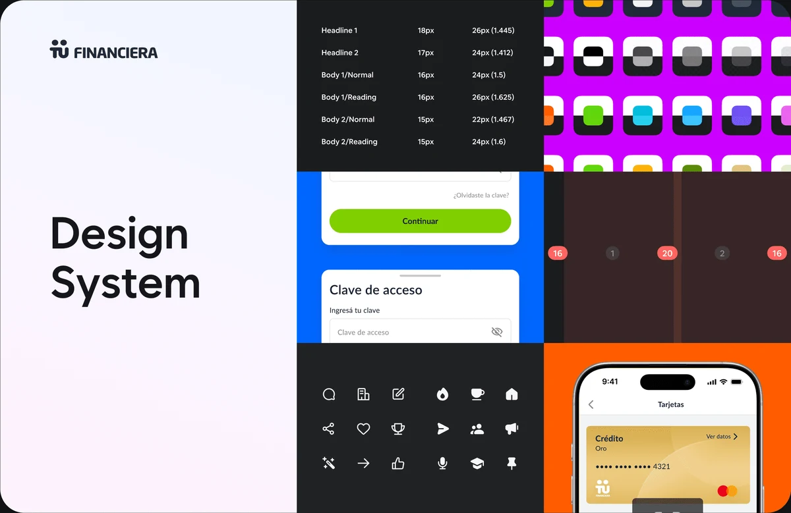

Case study · 01 · Fintech mobile app
Tu Financiera
Led the redesign of a fintech app serving 80,000+ active users (25,000 before launch).





In a team of three, I owned the core experience of the Tu Financiera app: automated sign-up, self-service product requests, 14 new flows, and a design system built from scratch.
From an advisor on WhatsApp to an app people run themselves
The redesigned app lets people sign up, see every product they own, and request new ones without waiting for an advisor. It launched with an NPS of +73.5, with 80.6% promoters across 433 responses.
NPS at launch
Satisfaction with the new experience
Sign-ups in the first month, minimal marketing
A Paraguayan fintech still run like a branch
Tu Financiera offers loans, savings, and debit and credit cards to people in Paraguay. Its app existed, but most of the real work, like opening a product or checking what you owed, still happened in conversations with an advisor.
Most customers are older adults who reached the company by WhatsApp, by phone, or by going all the way to a branch. Competitors had already moved those same processes into their apps.
One request, one advisor, and a WhatsApp thread
Opening any financial product meant messaging the sales team over WhatsApp, sending documents back and forth, and waiting while someone processed the data by hand. Once a product was open, users still couldn’t see it in the app: balances, installments and due dates lived with the advisor, not with the customer.
The challenge wasn’t a more modern app. It was giving people a better way to interact with their own products.
Listening to the business, then looking at the market
I worked directly with the company’s two owners and prepared the material my manager presented to the board. There were no customer interviews during the redesign, so customer priorities came from support data: it showed where things broke, if not why.
A benchmark of fintech and banking apps in Paraguay (Itaú, Ueno, Familiar, Continental, Basa and others), plus some international ones, showed what customers already expected. An impact-vs-effort evaluation then ranked what would remove the most friction at a cost the team could actually ship.



Three findings shaped the direction
- 01Advisor dependency was the bottleneck behind most support contact
- 02Competitors already offered digitally what Tu Financiera handled manually
- 03Users had no visibility into their own products
From “assisted” to self-service
The strategy centered on five pillars to move the product from “assisted” to “self-service”.

Sign up without waiting for an advisor
Rebuilt onboarding as an end-to-end flow with automatic validation. Users sign themselves up instead of waiting for an advisor to process their data.

Request any product from the app
Users request products directly in the app, with no back-and-forth over WhatsApp. This was the core transformation of the project and the strongest ask in user feedback.

Your products and balances, always in view
A home screen that shows active products and balances at a glance. Before, users had no visibility and contacted support just to confirm a status.

An interface that earns trust
A modern visual language, aligned to the brand, that replaced an app which felt outdated and insecure.

A consistent, scalable foundation
Built a design system from scratch with color, type, and components. It brought consistency to every flow and sped up the design team’s work.
Visibility for everything, or what users need right now
Stakeholders wanted visibility for everything, and I pushed for what users needed in that moment.
A focused home, not a catalog
Stakeholders wanted every product on the home screen so each one would get exposure. Our users are mostly older adults, and every extra option on the first screen makes the app harder and slower to use.
I proposed a home that shows only our star products, so customers reach the most important ones first, and backed each point with UX laws, mainly Hick’s Law: the more choices on screen, the longer it takes to decide.
Trade-off: the other products lost their spot on the home and the direct exposure that came with it. A clear home for the products that matter most was worth more than impressions for all of them.
Then, the first customer interviews
Management was hesitant about interviewing customers, so we started with one feature: scheduled transfers. I ran 12 interviews, with 10 customers and 2 staff members. What we heard changed the design.
Scheduling doesn’t belong in the middle of a transfer
72% of scheduled transfers were never executed. The entry point lived inside the transfer screen, and the manager wanted to keep it there because it’s the most visited screen in the app. The interviews showed two problems: customers thought scheduling was a mandatory step of the transfer, and most didn’t understand the feature at all. One staff member didn’t know it existed until a customer mentioned it.
Explaining it inside the transfer would slow down people who just want to send money fast. 9 of 10 customers asked for visible access to their scheduled transfers, so I moved “Tus agendamientos” (your scheduled transfers) to the savings account view, where customers already check their money. The amount is the main data point (10 of 10 asked for it), with a heads-up before the debit.
Trade-off: we gave up the most visited entry point in the app, so fewer people find the feature by accident. In exchange, customers see their scheduled transfers right next to their balance and get warned before the debit.
Don’t cancel on the first missed payment
71% of failed scheduled transfers failed because of insufficient balance, and the original feature simply cancelled them. Cancelling can’t be the first option. Now, when a debit can’t go through, the customer chooses: transfer now, add it to next month, or skip this month.
Trade-off: three options instead of one makes the moment less simple. We accepted that because one month without balance should not erase a schedule the customer set up on purpose.
Self-service starts behind the screen
Aligning the business was the hardest part. Automating onboarding and product requests reshaped tasks operations had always done by hand. Getting business and operations aligned took more work than the UI itself.
Launch is where listening starts. We kept listening after launch, and self-service demand ran deeper than the redesign had scoped. That pointed to the next stage of the product.
Research earns trust in steps. Our redesign priorities came from customer-support data, which showed where things broke but not why. Management was hesitant about interviewing customers, so we started with one feature, scheduled transfers, and those interviews changed the design. Next time I’d pair the data with interviews from the start.
Expanding the app with new features, improving our main products to drive higher adoption, and scaling the design system, including dark mode.
The 14 flows only worked in a team of three because they shared one system: tokens, styles and 216 components, built from scratch during the redesign.
Read the Design System case study →


Let’s build something worth shipping
Briefs, collaborations, or a quick question. I read everything and usually reply within a couple of working days.